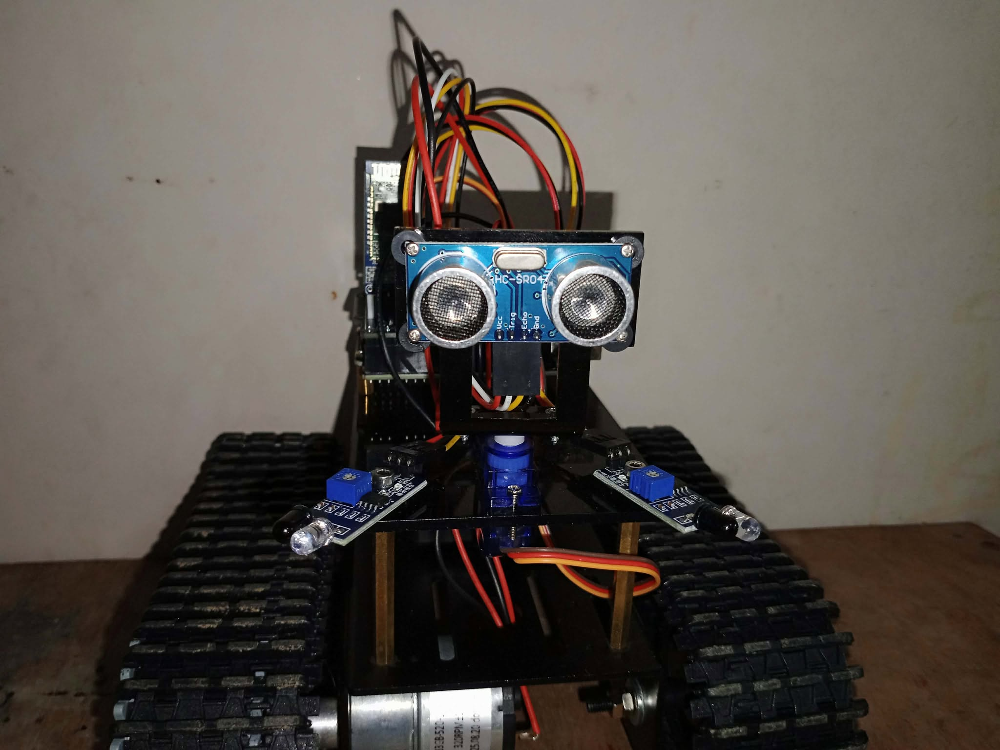
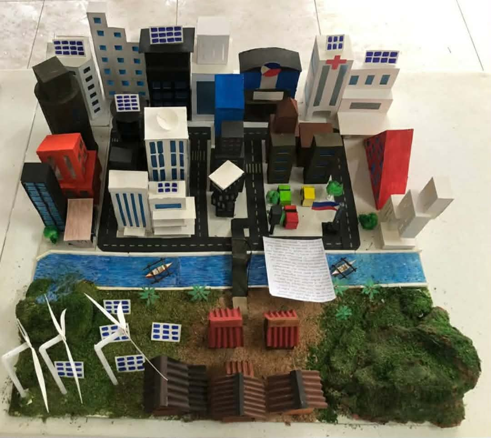
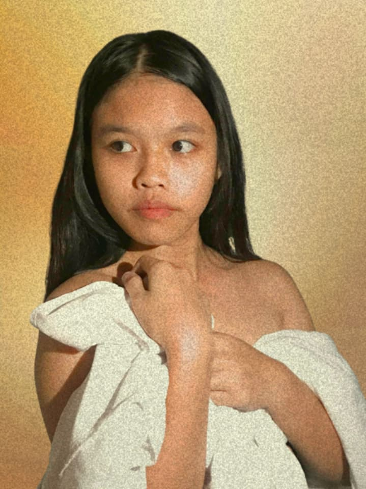
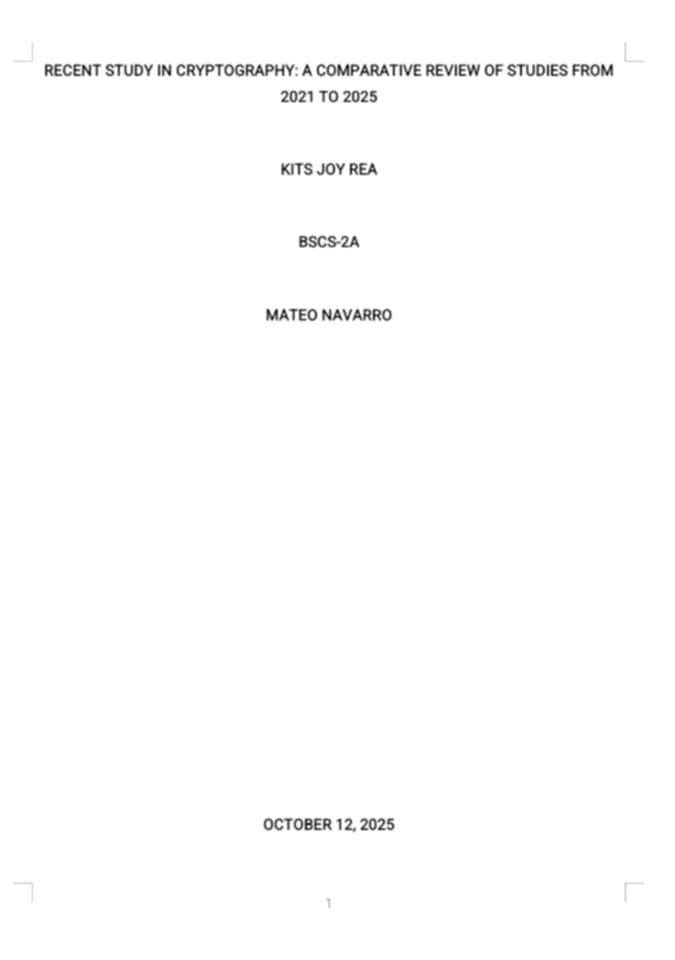

Here are some of my recent works and creations

This is our embedded system project—a small tracked robot with an ultrasonic sensor and infrared sensors for obstacle detection and navigation. Its motors are controlled by a microcontroller, allowing it to move autonomously while avoiding obstacles. This project showcases the integration of sensors, motor control, and embedded programming.

This diorama represents a miniature urban city integrated with elements of sustainability and nature. It features a variety of buildings, including residential, commercial, and healthcare structures, along with roads and vehicles to depict city life. A river flows through the city, adding a realistic water element, and small boats are included to show transportation. Surrounding the city are green spaces with trees, wind turbines, and solar panels, highlighting the use of renewable energy and environmental awareness. The project creatively combines urban development with ecological elements, demonstrating a balance between modern life and nature.

This is a recreation of William-Adolphe Bouguereau's painting "Portrait of a Girl in a White Drape." The original shows a young girl with a gentle expression, draped in white fabric, symbolizing innocence and calm introspection. The recreated version imitates the pose and draping, capturing the essence of the original artwork in a modern photograph.

The case study titled "Recent Study in Cryptography: A Comparative Review of Studies from 2021 to 2025" examines and compares different research studies related to cryptography published between 2021 and 2025. The study focuses on understanding new developments, techniques, and improvements in encryption methods used to protect digital information. It highlights the importance of cryptography in securing communication, protecting sensitive data, and preventing cyber threats. Through comparison of recent studies, the research provides insights into current trends and the growing role of cryptography in modern technology.
This video presents our entrepreneurship pitch for BreathCube, a compact device designed to help improve air quality and promote healthier breathing. It explains the product’s concept, its benefits, and how it can help people experience cleaner and safer air.